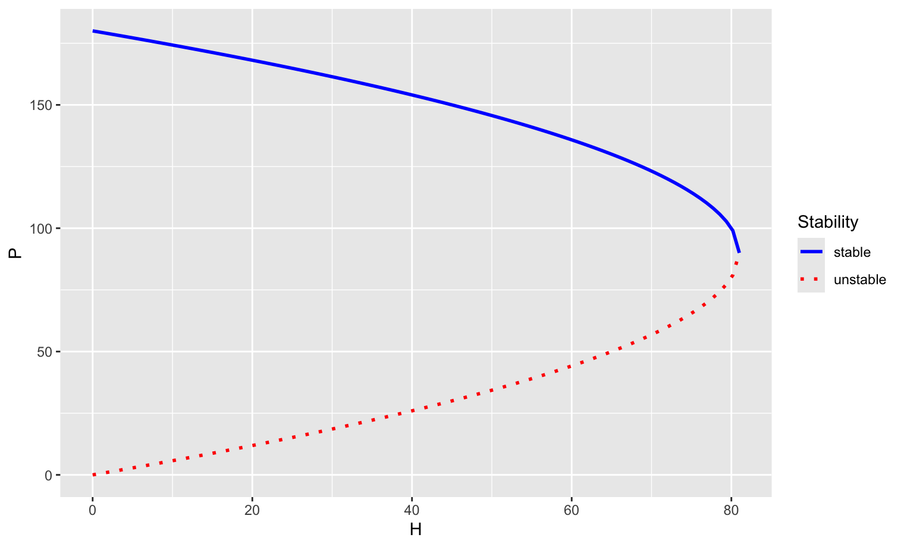

It is often the case that an outside influence affects a population. A population of economic value might be harvested for resource consumption. A species that is deemed harmful might have outside efforts to control or eradicate the population. Endangered populations may be influenced by conservation efforts to modify the birth or death rates or to supplement natural population growth through artificial migration. Mathematical models can often help us understand some of the impacts of these interventions on a population.
This section will suggest some of the ways that we can analyze the effects of interventions on a population. These interventions often are targeted at changing the growth rate, and analysis can explore if changes to the mathematical model will lead to such changes in population growth. We will use harvesting as a specific intervention to motivate our discussion.
Consider a population that prior to any intervention can be modeled as a sequence with a projection function \(f\text{,}\)
We are interested in the changes to the model when we introduce harvesting. Harvesting corresponds to removing additional individuals from the population than occur naturally through death and emigration. If we let \(H_{n+1}\) be the sequence for the number of individuals harvested during the \((n+1)\)st cycle for the population, then the new model for our sequence will be defined through
The two simplest models for harvesting correspond to a constant harvesting rate and a proportional harvesting rate. A constant harvesting rate occurs when the same number of individuals are removed from the population during each cycle, independent of the current size of the population. A proportional harvesting rate occurs when the harvesting efforts remove a number of individuals that is proportional to the population size. This model is often used to approximate what happens when harvesting effort is constant but success in capturing an individual is proportional to the population size. Other models might also be formed that capture the idea that it is harder to find individuals to harvest when the population is small with nonlinear functions.
In addition, we will explore the effect of intervention on the potential equilibrium values of the model as well as the stability of those equilibria. A fundamental structural change in the behavior of the model such as the creation or loss of an equilibrium or a change to an existing equilibrium’s stability is called a bifurcation. This section will introduce some examples of bifurcations.
where \(H\) is the number of individuals harvested per cycle. In the context of the graphical analysis of the projection function, this corresponds to shifting the graph of the projection function vertically downward by the value of \(H\text{.}\) This changes the values of fixed points and for large enough values of \(H\) can make the fixed points vanish.
Example2.7.1.
Consider the discrete logistic model using the projection function parametrized as \(f(x) = (1+r_0)x - a x^2\text{.}\) As discussed in Example 2.5.9, the natural fixed points for this model are at \(P=0\) and at \(P=K=\frac{r_0}{a}\text{.}\) Once constant harvesting is introduced, the modified projection function is given by \(f_H(x) = (1+r_0)x - a x^2 - H\text{.}\)
The fixed points are the solution to the quadratic equation
\begin{equation*}
-a x^2 + r_0 x - H = 0\text{.}
\end{equation*}
The solutions are given by the quadratic formula
\begin{equation*}
x = \frac{r_0 \pm \sqrt{r_0^2 -4 a H}}{2a}\text{.}
\end{equation*}
When \(H=0\text{,}\) we recover the unperturbed fixed points. As \(H\) increases, the expression inside the square root, \(r_0^2-4a H\text{,}\) decreases until it equals zero at the value \(H = \frac{r_0^2}{4 a}\text{.}\) For any value of \(H \gt \frac{r_0^2}{4 a}\text{,}\) there are no fixed points, a catastrophic result for the population that is predicted to decrease indefinitely.
You should note that for \(H \gt 0\text{,}\)\(P=0\) is no longer a fixed point. Mathematically, even though there are no individuals, the model still harvests individuals resulting in a negative population. Although this does not make physical sense, it is biologically significant for very small populations. It would indicate that for small enough populations, constant harvesting would eradicate the population in a single step. And for populations that are below the lower fixed point, the population would be decreasing steadily towards this same fate.
You can explore the cobweb diagram for this situation for the discrete logistic model with \(r_0 = 1.8\) and \(a = 0.01\) and varying values for \(H\text{.}\) The bifurcation occurs when \(H = \frac{r_0^2}{4a} = 81\text{.}\) Notice that if your initial condition is below the lower fixed point, the population will die off. Also notice that if \(H\) is above the bifurcation value, there is no population that will be able to survive.
Figure2.7.2.
When working with bifurcations, it is often useful to create a bifurcation diagram. For the example above, our bifurcation diagram might show the values of the fixed points as they depend on the value of \(H\text{.}\) In addition, by changing the line style of the graph, we can indicate the local stability of the fixed points. A dotted or dashed line is often chosen to represent an unstablew fixed point. For the parameter values used, the upper fixed point was stable so long as it existed and the lower fixed point was unstable. The following code generates a graph that we can use.
# Parameters for the diagram
r0 <- 1.8
a <- 0.01
# We calculated the bifurcation point as H=81
H_vals <- seq(from = 0, to = 81, length.out = 100)
# For these values of H, calculate the two fixed point locations
fp1 <- (r0 + sqrt(r0^2 - 4 * a * H_vals))/(2*a)
fp2 <- (r0 - sqrt(r0^2 - 4 * a * H_vals))/(2*a)
# Make a graph
library(ggplot2)
ggplot() +
labs(x = "H", y = "P") +
geom_line(mapping = aes(x = H_vals, y = fp1, color="stable"),
linewidth = 1) +
geom_line(mapping = aes(x = H_vals, y = fp2, color="unstable"),
linewidth = 1, linetype = "dotted") +
scale_color_manual(name = "Stability",
values = c("stable" = "blue", "unstable" = "red"))
Listing2.7.3.

This type of bifurcation where two fixed points with opposite stability merge and subsequently vanish is called a saddle node bifurcation. The bifurcation itself occurs at the parameter value where the two fixed points coalesce.
Subsection2.7.2Proportional Harvesting
A proportional harvesting rate results in a model
\begin{equation*}
P_{n+1} = f(P_n) - h \cdot P_n\text{,}
\end{equation*}
where \(h\) is the proportionality constant of \(H_{n+1} = h P_n\text{.}\) For small populations, there will be small numbers harvested; for large populations, there will be large numbers harvested. If \(f(x)\) has a fixed point at \(x=0\text{,}\) the harvesting model will also have that fixed point. The following example considers the effect of proportional harvesting on the discrete logistic model.
Example2.7.4.
Again consider the discrete logistic model parameterized by the projection function \(f(x) = (1+r_0)x - a x^2\) with fixed points at \(P=0\) and at \(P=K=\frac{r_0}{a}\text{.}\) With proportional harvesting, the modified projection function is given by \(f_h(x) = (1+r_0)x - a x^2 - hx\)
The fixed point equation
\begin{equation*}
(1+r_0)x - a x^2 - hx = x
\end{equation*}
The fixed points of the perturbed model are \(x = 0\) and \(x=\frac{r_0-h}{a}\text{.}\) When \(h=0\text{,}\) the second fixed point corresponds to our original value \(K=\frac{r_0}{a}\text{.}\) As \(h\) increases, the location of the second fixed point steadily decreases. When \(h=r_0\text{,}\) the two fixed points overlap, and when \(h \gt r_0\text{,}\) the second fixed point is a negative value.
You can explore the cobweb diagram for this situation for the discrete logistic model with \(r_0 = 1.8\) and \(a = 0.01\) and varying values for \(h\text{.}\) The bifurcation occurs when \(h = r_0 = 1.8\text{.}\) Notice that if your initial condition is between the two fixed points, the population increase. But if the harvesting rate exceeds the intrinsic per capita net growth rate \(h \gt r_0\text{,}\) then the population converges to an extinct state.
Figure2.7.5.
Before generating a bifurcation diagram, let us consider the stability of our fixed points. The projection function that includes harvesting is given by
\begin{equation*}
f(x) = (1+r_0)x - a x^2 - h x\text{.}
\end{equation*}
Consequently, we see that \(x^*=0\) is locally unstable when \(h \lt r_0\text{.}\) That is, a small population will be able to grow so long as the per capita net growth rate exceeds the per capita harvesting rate. However, once \(h \gt r_0\text{,}\) the slope \(f'(0)\) has value less than 1 and the fixed point is stable. This means that a small population will converge towards extinction. (A population does not want extinction to be a stable equilibrium.) The other fixed point has the reverse stability. Note that it is possible for instability if \((r_0-h) \gt 2\text{,}\) where the model would introduce unstable oscillations around the fixed point. For the parameters explored above, this does not happen.
The following code generates a bifurcation diagram. Note that the plots for the fixed points are divided into two parts to capture the change in stability.
# Parameters for the diagram
r0 <- 1.8
a <- 0.01
# We calculated the bifurcation point as h=1.8
h_vals_1 <- seq(from = 0, to = 1.8, length.out = 10)
fp1_1 <- rep(0, length(h_vals_1)) # Need as many "0" as values of h
fp2_1 <- (r0 - h_vals_1)/(a)
h_vals_2 <- seq(from = 1.8, to = 2.5, length.out = 10)
fp1_2 <- rep(0, length(h_vals_2)) # Need as many "0" as values of h
fp2_2 <- (r0 - h_vals_2)/(a)
# Make a graph
library(ggplot2)
ggplot() +
labs(x = "h", y = "P") +
geom_line(mapping = aes(x = h_vals_1, y = fp1_1, color="unstable"),
linewidth = 1, linetype = "dotted") +
geom_line(mapping = aes(x = h_vals_2, y = fp1_2, color="stable"),
linewidth = 1) +
geom_line(mapping = aes(x = h_vals_1, y = fp2_1, color="stable"),
linewidth = 1) +
geom_line(mapping = aes(x = h_vals_2, y = fp2_2, color="unstable"),
linewidth = 1, linetype = "dotted") +
scale_color_manual(name = "Stability",
values = c("stable" = "blue", "unstable" = "red"))
Listing2.7.6.
This type of bifurcation where two fixed points with opposite stability cross through one another and subsequently switch stability is called a transcritical bifurcation. The bifurcation itself occurs at the parameter value where the two fixed points coalesce, in this case when \(h=r_0\text{.}\)